Chonan, Chiba: things to do, food and stays
Chonan · Chiba
Chonan
Highlighted on the Chiba map.
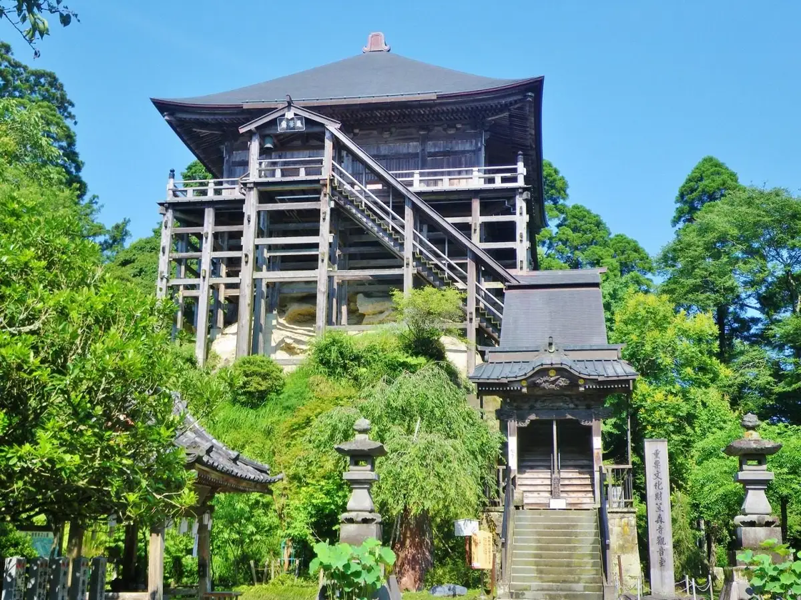
Stay
ゲストハウス・蓮（れん）
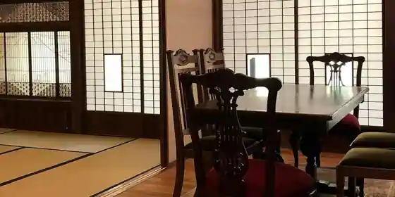
Guesthouse Hasu (Ren)
Guesthouse in Hondai, Chonan with a renovated traditional house and a quiet countryside setting.
Dining
らーめん八平
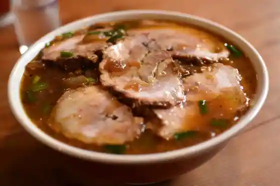
Ramen Happei
Pizzeria SHIGECHIKA
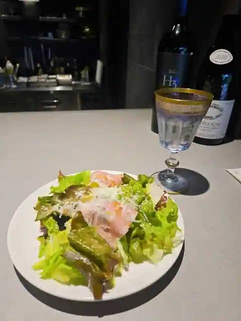
Pizzeria SHIGECHIKA
お食事処 やちよ
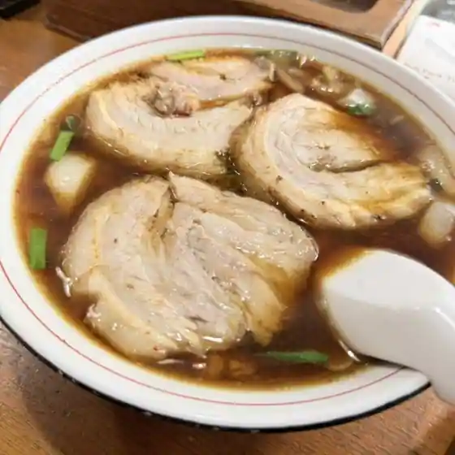
O Shokuji Tokoro Yachiyo
長南カントリークラブ レストラン
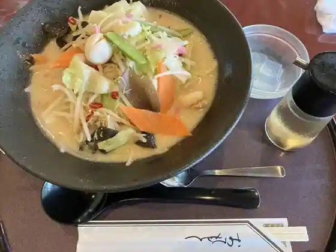
Chonan Kantorikurabu Restaurant
アバイディングクラブゴルフソサエティ レストラン
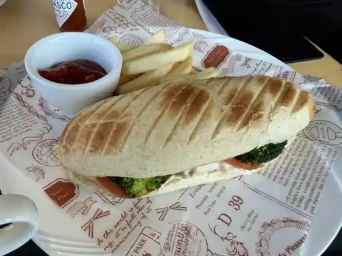
Abaidingukurabugorufusosaetei Restaurant
ピッツァ ストーリア
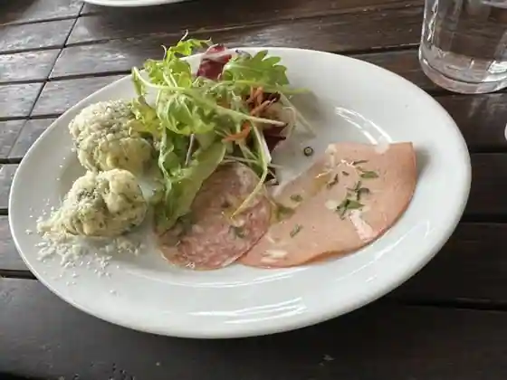
Pittsua Sutoria
大判焼 またの
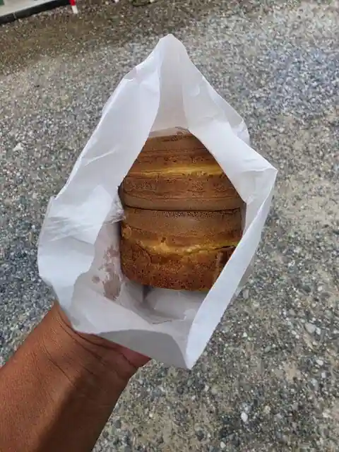
Obanyaki Matano
長南パブリックコース レストラン
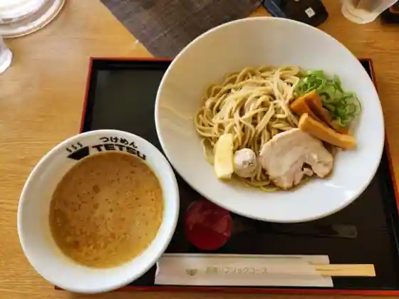
Chonan Paburikkukosu Restaurant
トーヨー・カントリー・クラブレストラン
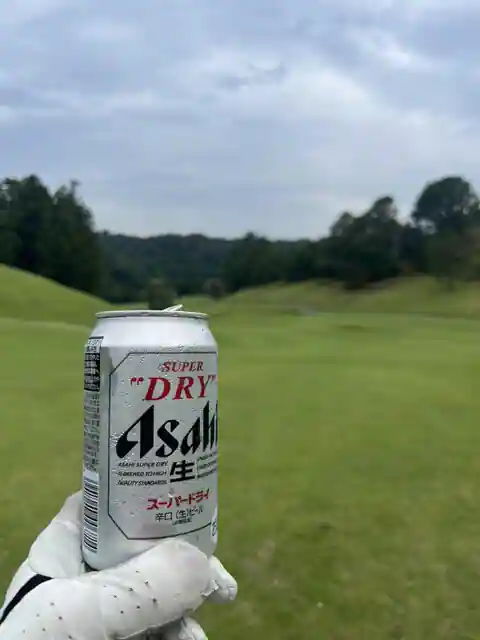
Toyo Kantori Kurabu Restaurant
CHONAN Nishisho CAFE
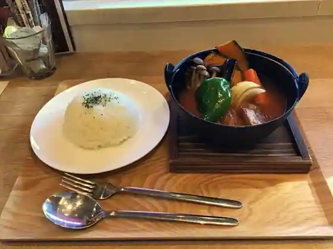
CHONAN Nishisho CAFE
くろねこカフェ
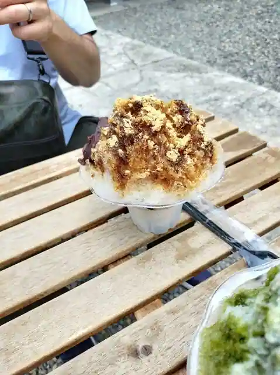
Kuroneko Cafe
田園カフェ
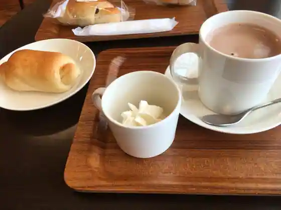
Den'En Cafe
ミハラシテラス
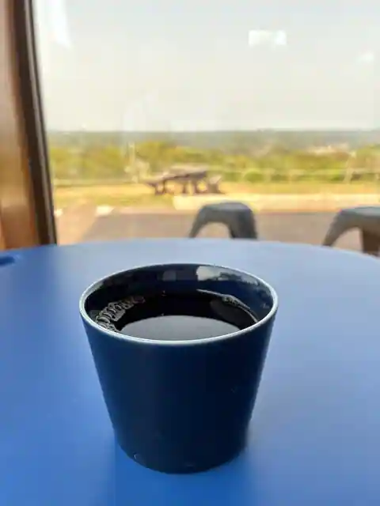
Miharashi Terrace
彩創喜 給田店
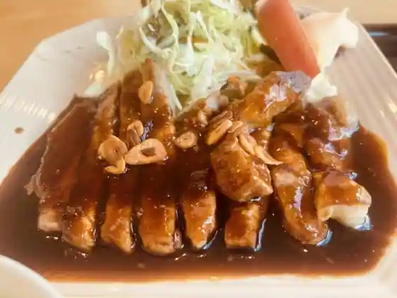
Sai So Ki Kyuden
GOOD WOOD cafe
GOOD WOOD cafe
芳泉茶寮
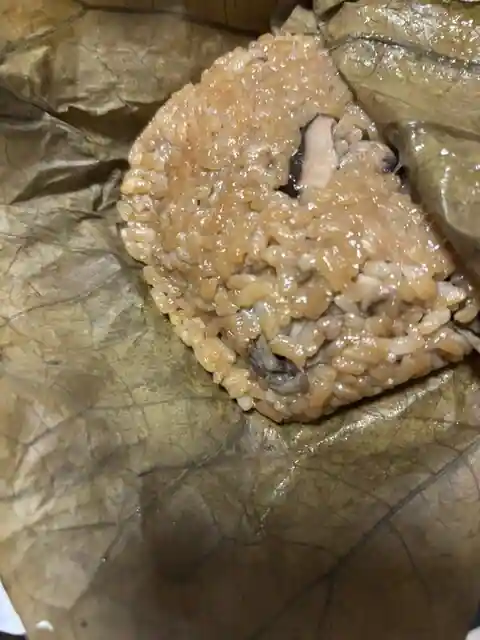
Hosen Charyo
やきとり 福仙
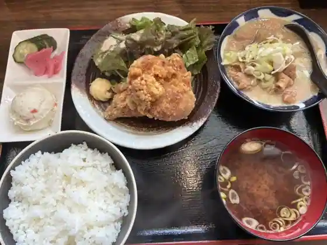
Yakitori Fuku Sen
ワンコin食堂
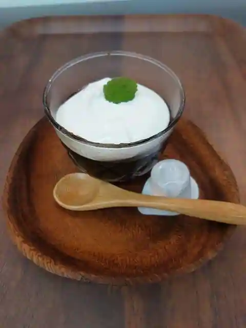
Wanko in Shokudo
カフェ こっとんぼーる
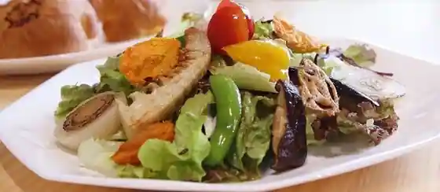
Cafe Kottonboru
GINO
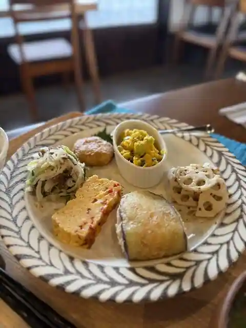
GINO
Sights
Kasamori Kannon (Kasamori Jikan Oto Do)
Kin'un Appu no O Tera Chofuku Hisashi Tera
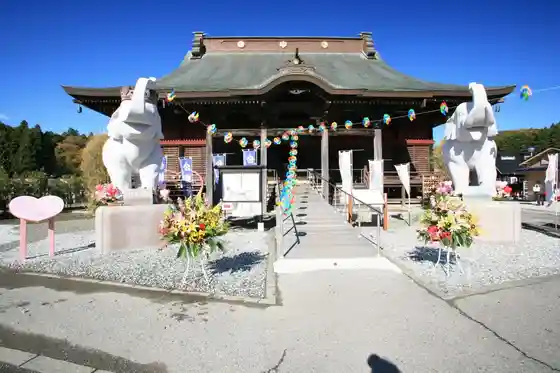
Kumano no Shimizu
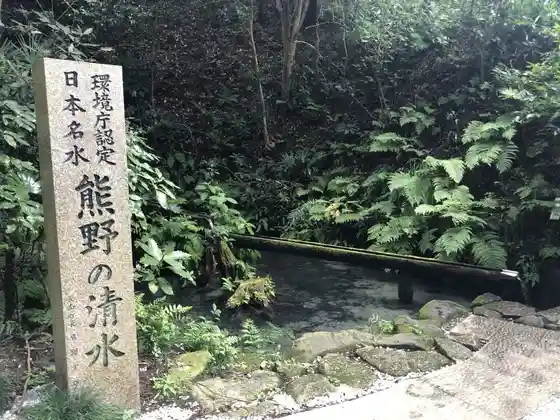
Nomi Kin Park
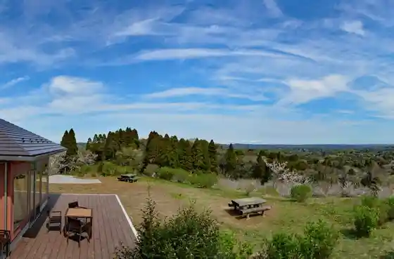
Kanto Fureai no Michi (Shutoken Shizen Hodo)
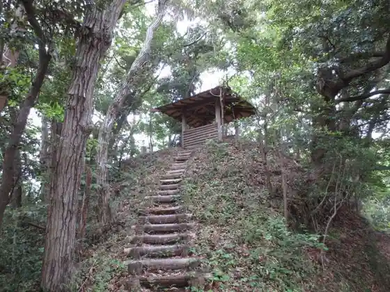
Choei Campground (Yaeijo)